QUIET PAUSES.
Compressed type and empty space build tension.
Sound after dark.
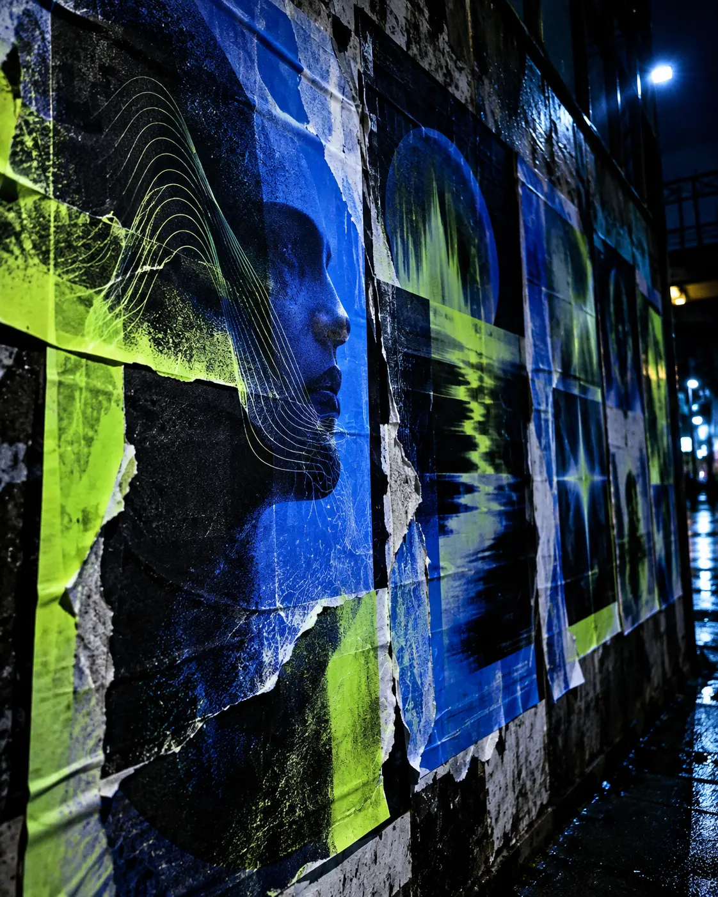
Create an electronic music event identity that feels like anticipation, not a collection of club photographs. Repetition, compression and pauses translate rhythm into type.
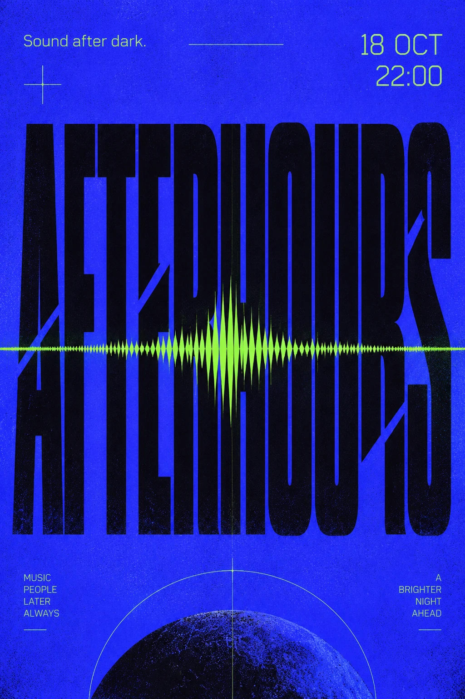
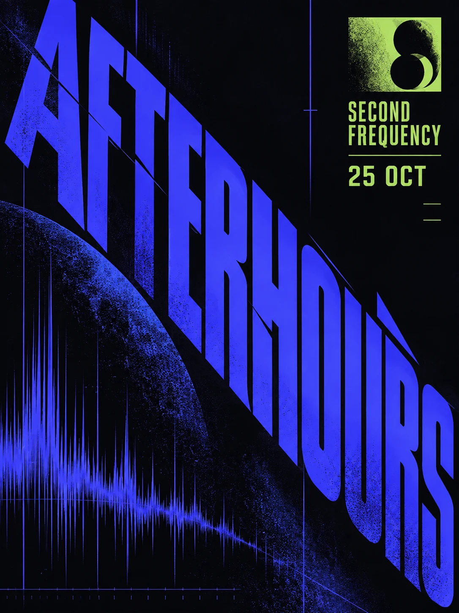
Two distinct compositions. One unmistakable voice.
LOUD TYPE.
QUIET PAUSES.
The wordmark sits within a flexible line-break system. Wide spacing introduces anticipation; tightly packed display type marks the drop.
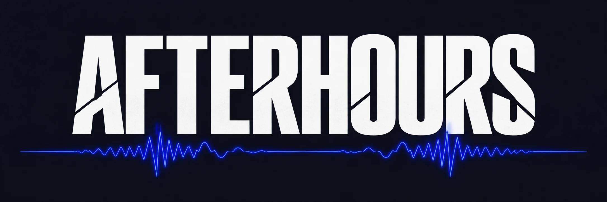
The design has to carry names, dates and direction as clearly as it carries atmosphere.
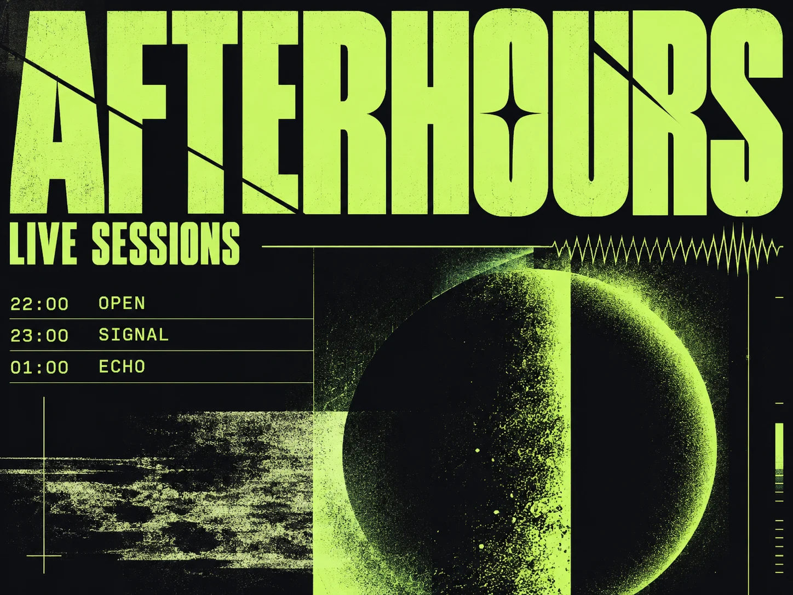
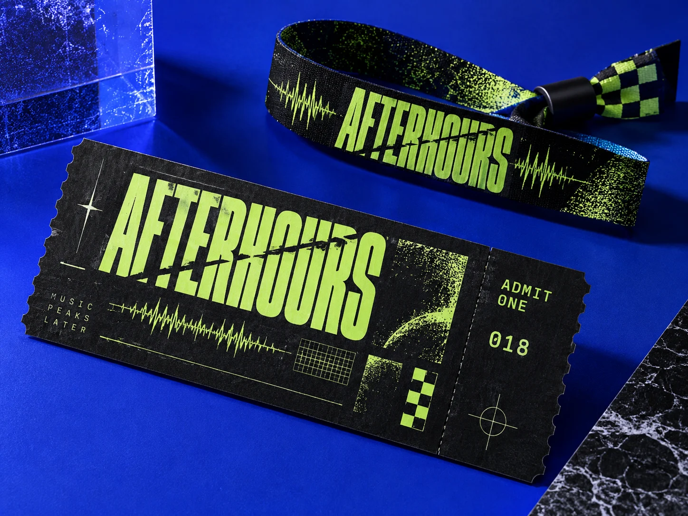
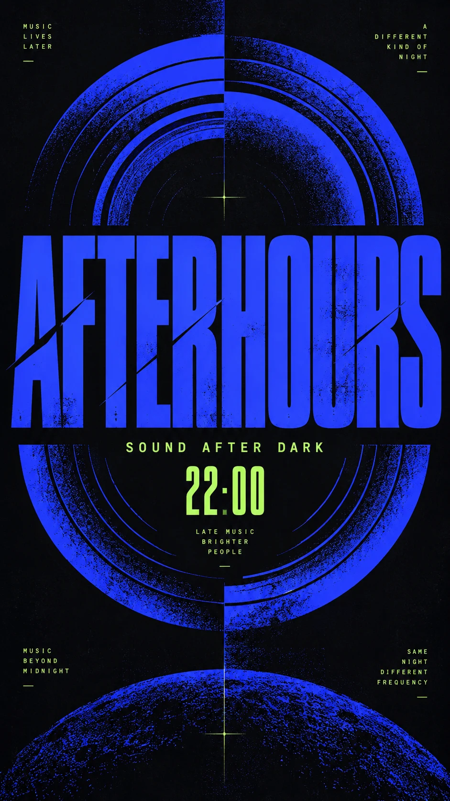
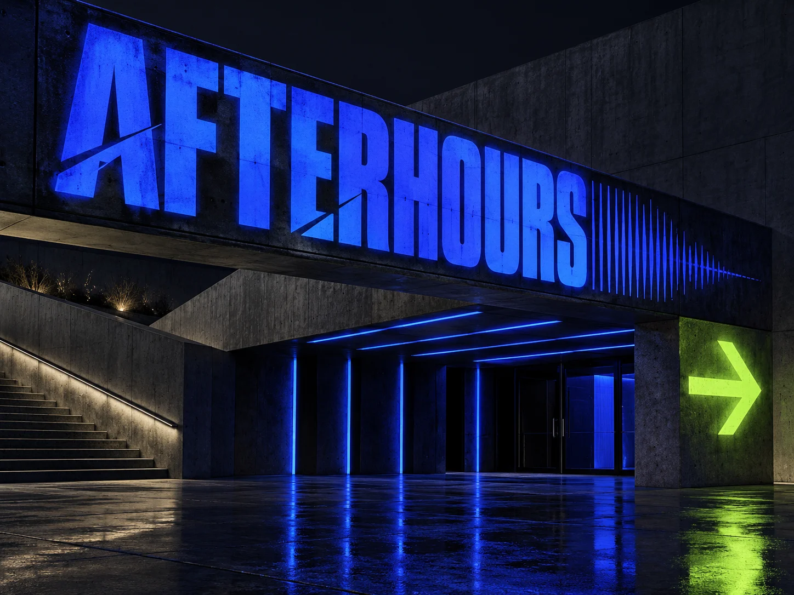
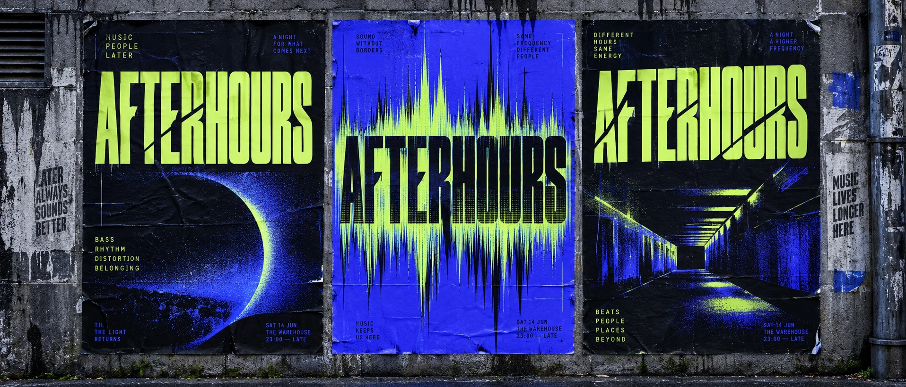
Artwork direction: graphic frequencies and controlled grain, not crowd photography. Information remains readable at street scale.
Begin with a held title. Introduce staggered letter cuts and a single blue frequency band. Build one typographic drop, then hold the event information. Keep the final wordmark intact; no strobing or rapid flashes.
01 / Establish
Introduce the core graphic gesture.
02 / Develop
Build the typographic rhythm.
03 / Resolve
Return to the approved identity.
Begin with a held title. Introduce staggered letter cuts and a single blue frequency band. Build one typographic drop, then hold the event information. Keep the final wordmark intact; no strobing or rapid flashes. Use the approved logo as a fixed composited asset; never regenerate its lettering. Master: 1920 × 1080, 25 fps, 12 seconds. Adaptation: 1080 × 1920. Deliver clean MP4 without interface graphics. This is a production direction, not a completed film.
A flexible poster language built from rhythm, distortion and layered type.
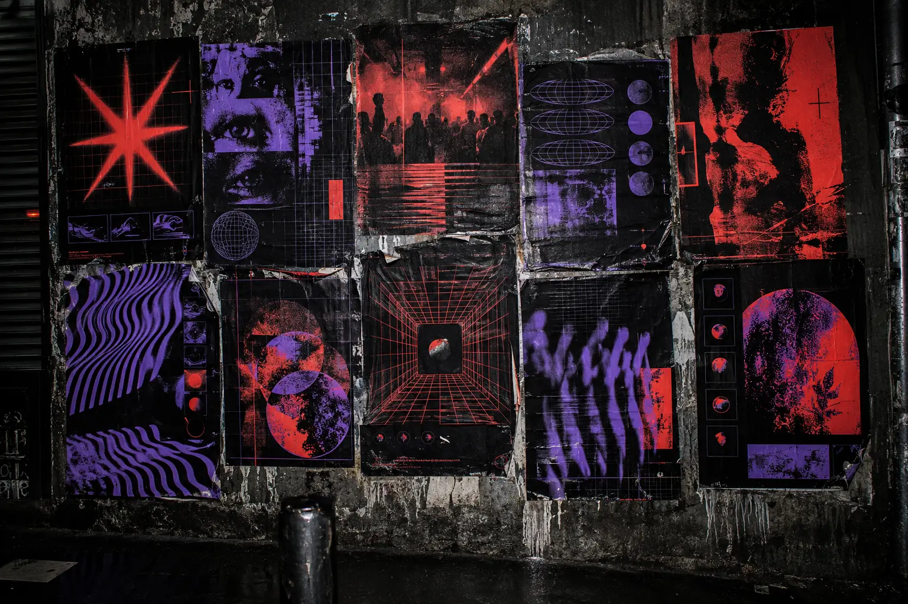
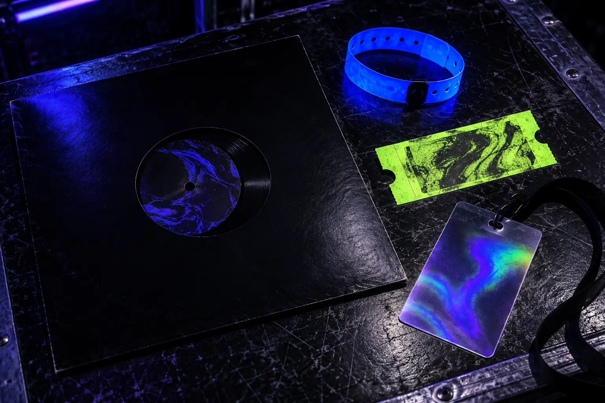
Five graphic extensions translate sound, anticipation and live energy into a complete event identity.
Compressed type and empty space build tension.
A compact mark for wristbands, stamps and avatars.
Time and performer hierarchy become the composition.
A collectible ticket with venue-coded color.
A motion-ready phrase for the live environment.
Role / Identity, art direction & motion direction
Independent brand concept